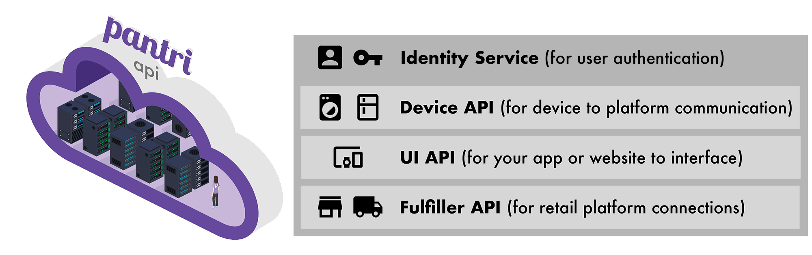
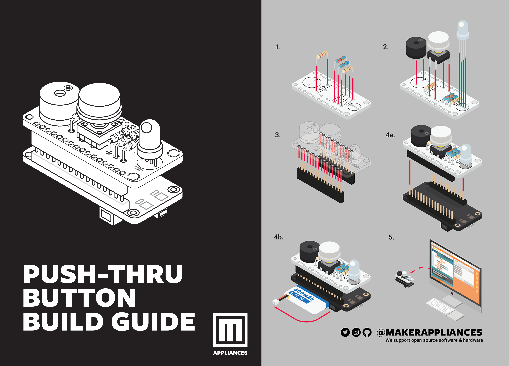

title: API Reference
language_tabs: # must be one of https://git.io/vQNgJ - shell - ruby - python - javascript
toc_footers: - Sign Up for a Developer Key - Documentation Powered by Slate
includes:
- stories
search: true
Want to build on Pantri?
We're working to open our API to anyone who wants to build on it, without needing to enter a partnership.
We want to enable self organised integration for everyone from a maker with an IoT fruitbowl, to an international grocer.
Here's what you can expect: a simple, clean API using RESTful principles, modern identity and access control infrastructure, and a lean, mean 5 minute install to get a device or application up and running - FAST!
4 Spheres
From a design perspective, the API operates within 3 functionality spheres, with an overarching Pantri ID to handle all user specific content robustly and independently.

Sphere Collections
The API can be best considered as a group of collections within these spheres, that can each independently be used as required for your specific use case.
ID
- Personal Data
- Delivery Address Data
- Payment Details Data
Device
- Activity Reporting
- alter inventory action
- Place an order action
UI
- Device Configuration
- Product
- Inventory
- Rules / Subscriptions
- Orders
- History
Fulfilment
- Retailer Inventory (Price, Product)
- Dispatch Data
- Delivery Completion Data ## Maker Apliances Are you a Maker/electronics enthusiast? Take a look at Maker Appliances www.makerappliances.com which has a range of ideas and kits that are build on the Pantri API.

A Few Examples
A Smart Fridge
Will principally report usage of items - such as 45% milk carton remaining, butter removed and not returned within 5 hours, etc. This data can be used to track inventory - with a specific report either altering inventory levels (as with Milk for example), or in the case of the butter - a binary reorder instruction.
A Smart Fridge With A Screen
If a smart fridge has a screen, then it could have a native Powered by Pantri application, that would also link into the identity and UI API's.
An App
Acts as the dashboard to configure all or part of the Pantri service. Perhaps its an app to go with a Pantri Connected Device - which would limit the functionality to the devices and products relevant to the brand, or it's a retailers online shopping portal - that links any device exclusively to their own retail endpoints.
In either case, the UI sphere enables he platforms to configure the platform, from configuring a users device to track and amend inventory, place orders, and look up account history.
A Retailer / Fulfiller
Finally, a retailer transacting orders from Pantri needs to connect to Pantri in a certain manner. It needs to share information about the products it stocks, recieve orders, and inform the user via Pantri that they've dispatched the item and it has subsequently been delivered (to update inventory where it is tracked).